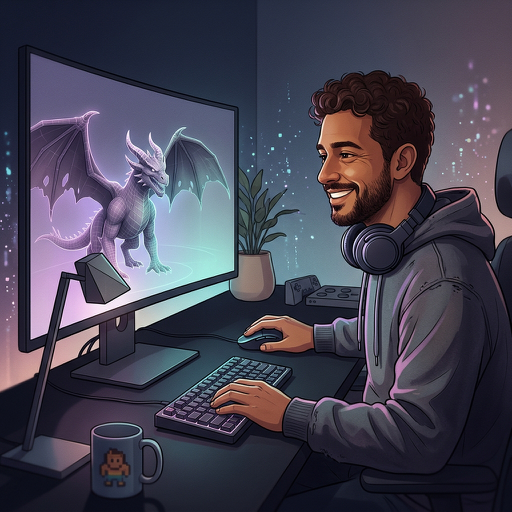

A Ilusão do Offline: Uma feature simples que deveria levar 2 horas.

Comprar Espada Lendária · 500 Ouro
A Lógica Essencial: No Editor, a compra cabe em 3 passos.
A Armadilha do Multiplayer: 1 Dev Forçado a Virar 4.
Lucas · Sobrecarga de Infraestrutura
4 papéis fora do jogoMark et al. (ACM CHI 2005): 25m26s p/ retomar tarefa após troca ↗ · Parnin & Rugaber (2011): só 10% retomam em <1 min ↗
Tabelas, transações e migrações (~45 linhas).
Politowski et al. (2021 · 200 jogos): erros técnicos travam produção ↗Rotas HTTP, APIs e JSON manual (~50 linhas).
Unity Gaming Report (2024): 37% travam ao integrar sistemas ↗Sessão, escopo e anti-cheat no servidor (~40 linhas).
Irdeto/Forbes: 77% largam cheats; 48% compram menos ↗Containers, portas e deploy em nuvem (~45 linhas).
GDC (2024): custo restringe live-service a 16% ↗O Gargalo Real: 90% do Tempo Gasto Fora do Gameplay.
Pesquisa anual da Unity com estúdios: 68% desenvolvem jogos online e 37% atrasam integrando sistemas externos.
Relatos reais de equipes após o lançamento mostram sobrecarga técnica e gargalos liderando atrasos e cortes.
Sem sair da Unity: 1 clique para iniciar o serviço.
Um template pronto gera o serviço online na hora.
A Solução em Código: 21 Linhas de C# Substituem 4 Profissões.
01[ExoService("loja_itens")]
02public class LojaDeItens
03{
04 [ExoAction(Scope = "player")]
05 public Inventario ComprarEspada()
06 {
07 var inv = Exo.Database.Get<Inventario>(Exo.Context.CallerPlayerId);
08 if (inv.Ouro < 500) throw new ExoActionException("Sem ouro!");
09 inv.Ouro -= 500;
10 inv.Itens.Add("espada_lendaria");
11 Exo.Database.Put(inv);
12 return inv;
13 }
14}
15[ExoResource]
16public struct Inventario
17{
18 public string Id;
19 public int Ouro;
20 public List<string> Itens;
21}Publicação na Nuvem em 1 Clique
Publica direto da Unity, sem containers ou pipelines.
Conexão Automática com a Unity
Expõe a ação para a Unity sem rotas manuais.
Proteção Anti-Cheat por Padrão
Só o jogador autenticado altera seu saldo.
Foco 100% no Gameplay
Código enxuto só no jogo evita 15x mais bugs e +124% de atraso.
Persistência Segura Sem SQL
Salva ouro e itens em banco transacional, sem SQL.
Operação Enterprise: Painel, Logs e Escala sem Escrever Infra.
Painel Ao Vivo (Producer Studio)
Game designers consultam e ajustam itens do jogo ao vivo, sem criar painel interno.
Tabela de Logs Seguindo o Fluxo
Exoforge: Auto-scale (100 a 100k+ online)
Zero Downtime: atualizações ao vivo sem derrubar jogadores.
Downtime = tempo em que o jogo precisa fechar para atualizar.
O Retorno Econômico: De Semanas Perdidas para Lançamento no Mesmo Dia.
~180 linhas de infra e troca de contexto
21 linhas em 1 arquivo (C# na Unity)
EXOFORGE — Você descreve a sua ideia. Nós forjamos o resto.
Da regra da Loja de Itens ao jogo no ar — com operação de infra gerenciada pelo Exoforge.